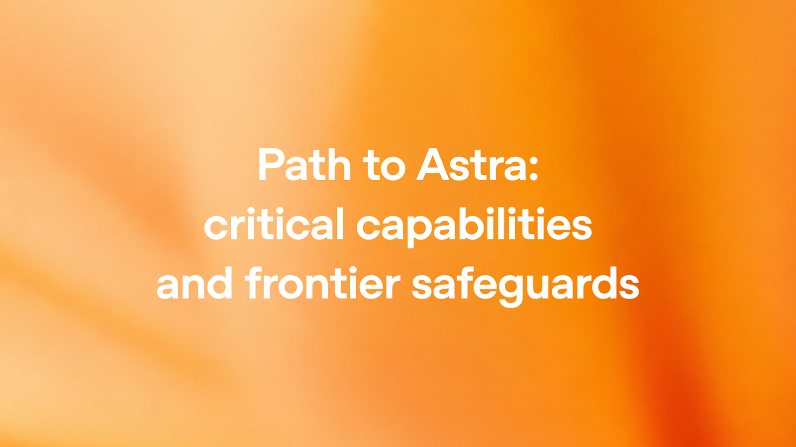
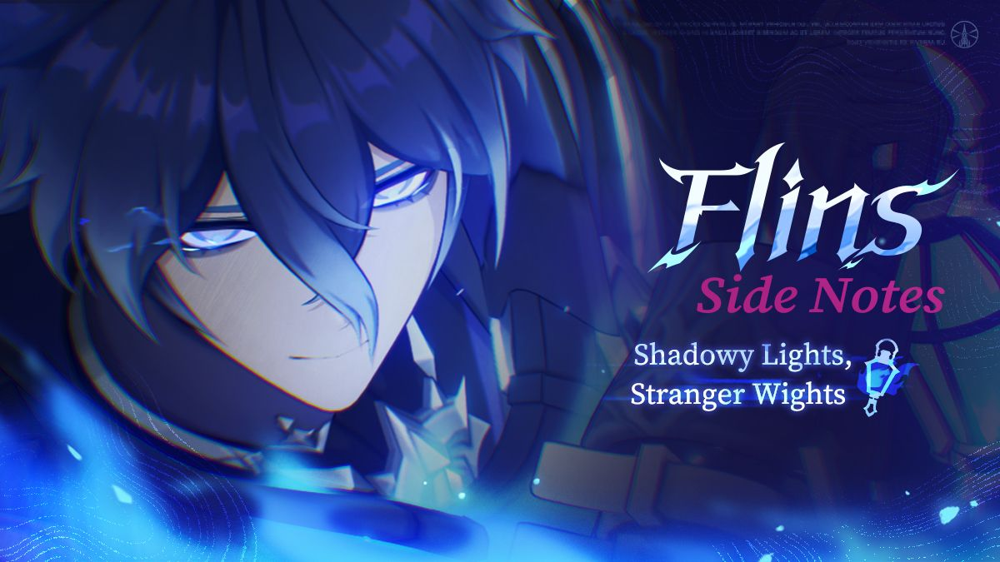
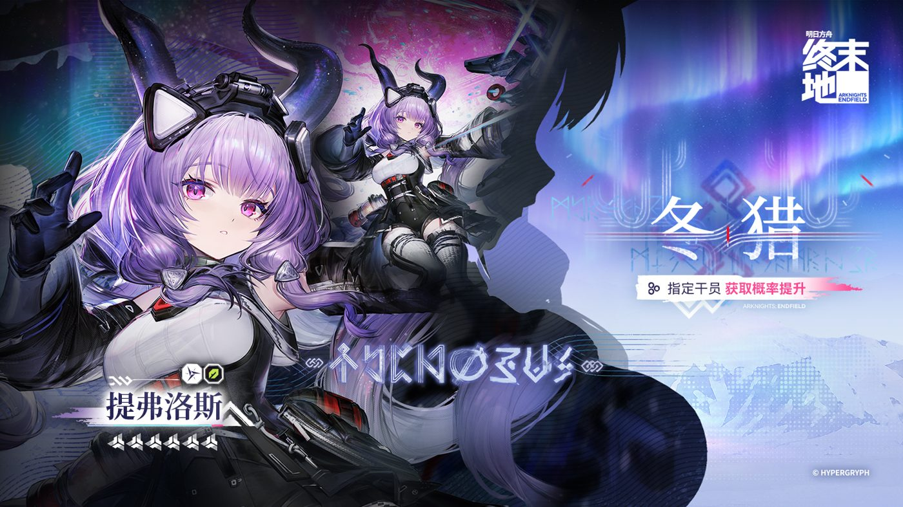
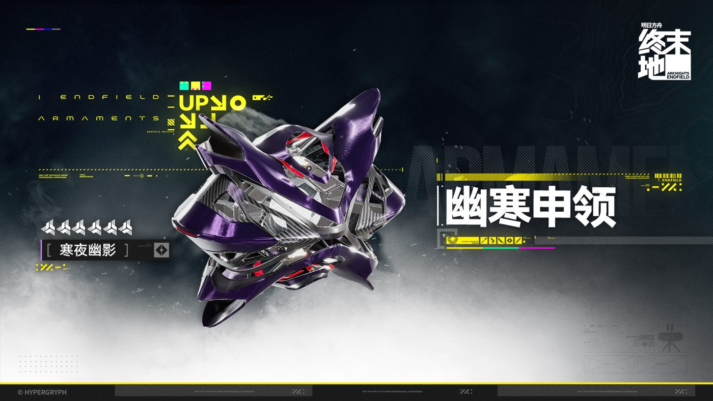
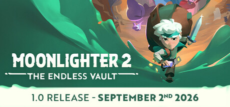
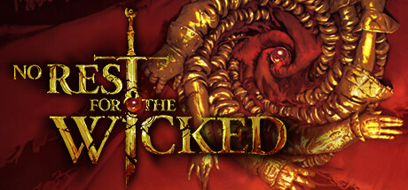

🔥🔥🔥
今日有新旗舰：Claude Fable 5.1
Anthropic 把 Fable 5.1 推到一般可用，API id claude-fable-5-1。Mythos 5.1 同权重、仅受信访问。不是游戏《神鬼寓言》。
- 日期
- 2026-09-01 美西晚 ≈ 09-02 CST 补入核
- 库
- AI 观察
- 状态
- 一般可用 · 旗舰
今日有新旗舰：Claude Fable 5.1。今日无新 MCP/Skill 推荐。主线是 Anthropic 把 Fable 5.1 推到一般可用，以及《夜勤人2：无尽宝库》今晚 21:00 CST 出 1.0（截稿仍 EA）。
claude-fable-5-1）不复述：DeepSeek Vision 权重、OpenAI Ads $1B、Anthropic 8/31 对齐长文、OpenAI×Cursor 切断、Grok 4.7（仍未发布）、State of Play 片单、英雄萨姆 / 呼吸边缘2 / Disc to Digital。游戏开发空库未出 Tab。gamescom 不重建。Claude Code MCP 修复不是推荐。
跨库最高 Attention 落在 Claude Fable 5.1 旗舰，以及《夜勤人2：无尽宝库》今晚 1.0 窗口与《恶意不息》延期。
观察清单：Grok 4.7 未锁；Astra 正式 launch；夜勤人2 今晚翻牌；黎明行者之血 9/3；State of Play / Konami 9/3 未播不预写。Young Suns / 浪漫沙加3 仍待核。
Anthropic 把 Fable 5.1 推到一般可用，API id claude-fable-5-1。Mythos 5.1 同权重、仅受信访问。不是游戏《神鬼寓言》。
官方《Path to Astra》认定达 Preparedness Critical cybersecurity。计划 soon 可用，不是今日旗舰。
Digital Sun / 11 bit 定今晚全球 1.0 + 主机 + Game Pass。截稿 Steam 仍标抢先体验，不要写成已经 1.0 live。
Moon Studios 9/1 官方：原 2026/10 的 1.0 改到 2027/3，先 PS5 + PC。
昨报计划发售、截稿未解锁。现已开卖。1177 篇、好评 54.5%。Steam 简中名称仍是 Crimson Moon。
「孤灯夜访」菲林斯 + 「聚星源动」伊涅芙，昨 18:00 已过官方开门点。
| 观察库 | 独立 Signal | 密度 | 备注 |
|---|---|---|---|
| AI 观察 | 5 | 高 | 今日有新旗舰 Fable 5.1；今日无新 MCP/Skill 推荐 |
| 二次元游戏观察 | 2 | 中 | 原神下半已开门；终末地版本日，截稿维护未结束 |
| 游戏开发观察 | 0 | 空 | 游戏开发空库未出 Tab |
| 游戏行业观察 | 9 | 高 | 有独立新增；片单空增量 |
今日有新旗舰：Claude Fable 5.1。今日无新 MCP/Skill 推荐。窗内主线是 Fable 版本列车落地；Astra 只是预发布安全阈值。
不复述 DeepSeek Vision 权重、OpenAI Ads、Anthropic 8/31 对齐长文、OpenAI×Cursor。Grok 4.7 仍未锁。Claude Code changelog 里的 MCP 修复不是推荐。
Anthropic 发布 Claude Fable 5.1 与 Claude Mythos 5.1。二者同一底层、不同护栏。Fable 5.1 一般可用，API id claude-fable-5-1。Mythos 5.1 仅受信访问。不要和游戏《神鬼寓言 / Fable》混淆。


claude-fable-5-1fable / best 暂仍解析到 Fable 5，需 /model 显式选 5.1。| 评测项 | Fable 5.1 | Fable 5 | Opus 5 | GPT-5.6 Sol |
|---|---|---|---|---|
| Terminal-Bench-Science 0.1 | 52.6% | 24.7% | 29.0% | 22.4% |
| Terminal-Bench 4.0 | 55.8%（Mythos 60.9%） | 42.0% | 52.3% | 37.3% |
| GDPval-AA v2 | 1853 | 1723 | 1824 | 1711 |
| OSWorld 2.0 partial | 77.9% | 72.9% | 75.4% | 未核 |
| OSWorld 2.0 strict | 41.7% | 36.1% | 39.6% | 未核 |
| HLE no tools | 60.9% | 57.8% | 56.6% | 未核 |
| HLE with tools | 65.0% | 63.8% | 63.6% | 未核 |
| AutomationBench | 31.4% | 17.1% | 26.9% | 19.6% |
| CursorBench 3.2.0 | 73.4% | 70.5% | 70.0% | 67.2% |
数字来源：Anthropic 官方公告表。厂商自报，生产护栏开启。缺格写未核，不编。
关注度 · 🔥🔥🔥。今日旗舰。今日无新 MCP/Skill 推荐。
OpenAI 发布《Path to Astra》：认定 Astra 达到 Preparedness Framework 的 Critical cybersecurity 阈值。官方写计划 soon 可用，最强网络能力访问受限。这不是今日旗舰。

关注度 · 🔥🔥。预发布安全阈值，不升格旗舰，不附表，不进 MCP/Skill 推荐。
Google 给 Gemini 3.7 Flash / 3.6 Flash / 3.5 Flash-Lite 加上 agentic 视频理解。这是既有 Flash 线的能力上线，不是新旗舰。
processing: "agentic"关注度 · 🔥。专用能力，不是新旗舰，无已核对照旗舰表。
OpenAI 宣布 ChatGPT for Healthcare 可在授权后接入 Epic EHR，并提供 Healthcare Public Data 插件，结构化接入 ClinicalTrials.gov、CMS Coverage、RxNorm、DailyMed、PubMed 等公开数据集。
关注度 · 🔥。应用落地。不升格旗舰或推荐。
Copilot code review 的 overview 现含 approval assessment。默认不自动 approve。企业 / 组织 / 仓库三级开关打开后，approve 可计入 required-approvals；新 push 会 dismiss，与人类评审相同。
关注度 · 🔥。公开预览。Claude Code 默认切 5.1 已并入旗舰条。
本库两条运营向落地：原神 7.0 下半已开门；终末地「雪凇幽梦」官方今日发版本更新说明，截稿维护窗未关。
待核：鸣潮 3.1 周边致歉一线帖 ID 仍未核。砂金·戏浪 9/12。
官方第二期祈愿档期 2026-09-01 18:00–09-22 14:59。「孤灯夜访」诡灯陌影·菲林斯（雷）与「聚星源动」轰隆雷鸣波·伊涅芙（雷）同开。昨报截稿未到点；现已过官方开门点。

关注度 · 🔥。复刻开门日，非新角。昨报日历落地，本报改为已开门。
鹰角官网 2026-09-02 挂出「雪凇幽梦」版本更新说明。8/31 预告停机维护 06:00–12:00 CST。截稿仍在维护窗内，不写成玩家已经进服。


关注度 · 🔥。版本日官方稿已出；进服 live 待 12:00 后核。
今日有独立游戏观察新增（夜勤人2、Grail、龟龟潜海记、Crimson Moon）。展会片单无新世界首发 / 无新锁。主线是夜勤人2 今晚 1.0 窗口，加上《恶意不息》延期与 Crimson Moon 解锁口碑。
不复述 State of Play 片单、英雄萨姆、呼吸边缘2、Disc to Digital。昨报误用「深陷荒境2」，本报按 5.18 改回 Stranded Deep 2。gamescom 不重建。
Digital Sun / 11 bit studios 定 2026-09-02 13:00 UTC（21:00 CST）把本作拉出 PC 抢先体验，登陆 PS5 / Xbox Series / Switch 2 / Steam / MS Store，并同步 Game Pass。截稿 Steam 仍标抢先体验，不要写成已经 1.0 live。

coming_soon: false 是因为 EA 早已开卖，发行日仍写 2025-11-19；genres 仍含 Early Access / 抢先体验。关注度 · 🔥🔥。今晚窗口；截稿仍 EA。进独立轴交叉。
Moon Studios 2026-09-01 官方：1.0 从原定 2026 年 10 月改到 2027 年 3 月。先 PS5 + PC Steam；Xbox Series / Switch 2 日期 TBD。

关注度 · 🔥🔥。官方延期。不进独立轴（中厂 1.0 窗口变更，主记录在新游）。
Rebel Wolves / Bandai Namco 黑暗奇幻 ARPG 锁 2026-09-03（PS5 / Xbox Series / PC）。窗内评测破禁。截稿 Steam 仍 coming_soon，不要写成已经开卖。

关注度 · 🔥。明日发售观察。解锁后再核玩家评测。
昨报已录 8/31 首支预告。窗内 9/1 GameReactor 访谈：创意总监明确 Early Access early 2027，EA 预计 2–3 年。本作 Steam 简中名称字段仍是英文，按 5.18 留英文；昨报「深陷荒境2」作系列黑称/旧译，本报改回。
关注度 · 🔥。定档补核。无官方简中，留英文。
独立向地牢商店续作今晚出 1.0 并上主机 / Game Pass。截稿仍 EA。完整字段见「新游」轴，本条只记独立门槛：正式版窗口 + 已有特别好评。
关注度 · 🔥🔥。独立轴必列。主记录在新游，避免全文双开。
ProbablyMonsters 动作 RPG 2026-09-01 全球解锁（Steam 简中日期「2026 年 9 月 1 日」）。PS5 / Xbox Series / PC。昨报截稿尚未解锁。现 1177 篇、好评 54.5%，总评 Mixed / 褒贬不一。

关注度 · 🔥🔥。已核解锁 + Mixed。评分数仍在滚动。
Sokpop Collective 成员 Tijmen Tio 的奇幻自动战斗卡牌 2026-09-01 Steam 正式上线。58 篇评测、好评 89.7%，总评 Very Positive / 特别好评。样本小，标样本量。
关注度 · 🔥。小样本特别好评，进独立轴。
Xbox Wire 9/1：Shelldiver 即日起上云 / 主机 / PC Game Pass。Steam 简中店名是「龟龟潜海记 Shelldiver」。压倒性好评 98.7% / 17349。这是既有作品进库，不是新作首发。
关注度 · 🔥。独立轴附带。主机波次不全文重复。
Capcom 2026-09-01 官宣东京电玩展（幕张 9/17–21）可玩阵容，并定线上节目 Capcom Spotlight：9/16 07:00 PDT = 22:00 CST，约 40 分钟。均为已公布作品展台，不是世界首发，不进🎬片单。
关注度 · 🔥。厂商展台 / 线上秀预告。展会片单无新世界首发 / 无新锁。
Xbox Wire 2026-09-01：Shelldiver 即日起上云 / 主机 / PC GP。后续 SpeedRunners 2（9/3）、Dice a Million（9/4）、CoD Black Ops Cold War（9/8）、The Royal Writ + VF5 R.E.V.O. World Stage（9/10）、RuneScape: Dragonwilds（9/15）。TCG Card Shop Simulator 1.0 9/15 离开 Game Preview。
关注度 · 🔥。平台波次。龟龟潜海记进独立轴。
窗口（2026-09-01，2026-09-02] Asia/Shanghai，含昨 9:30 后补入核。空库：游戏开发观察未出 Tab。今日有新旗舰：Claude Fable 5.1。今日无新 MCP/Skill 推荐。今日有独立游戏观察新增。展会片单无新世界首发 / 无新锁。生成于 2026-09-02 11:00 档日常规整理。